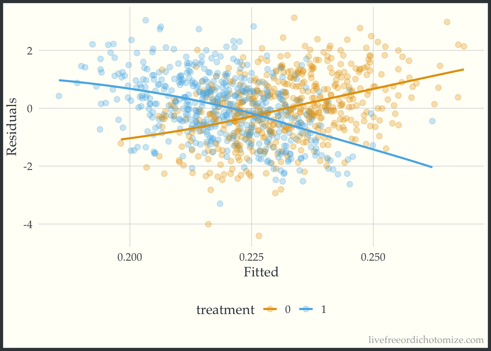
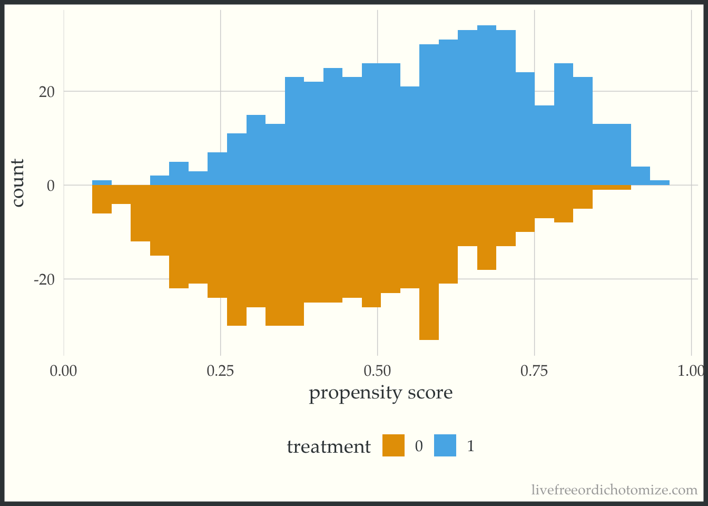
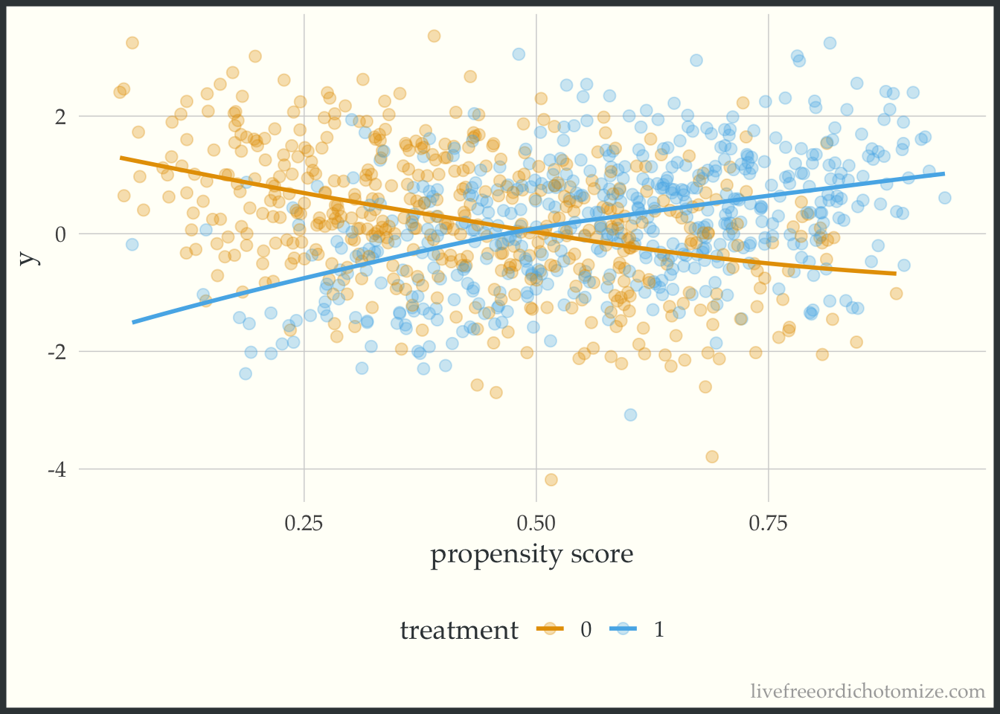

library(tidyverse)
set.seed(8)
n <- 1000
x <- rnorm(n)Visual Diagnostic Tool for Causal Inference: Heterogeneous Treatment Effects
rstats
causal inference
treatment heterogeneity
A simple diagnostic plot to examine potential treatment heterogeneity – what’s old is new!
To celebrate the 40th anniversary of the paper The Central Role of the Propensity Score in Observational Studies for Causal Effects published in Biometrika in 1983, the journal Observational Studies had a special issue highlighting the methods in the paper and developed since. This led us to take a closer look at this seminal paper, and in doing so we noticed mention of a visual diagnostic tool that we haven’t see used often but might be useful for exploring potential treatment effect heterogeneity.
We initially wrote this up as part of this special issue, you can find the paper here: D’Agostino McGowan, D’Agostino, and D’Agostino (2023) doi.org/10.1353/obs.2023.0008. Another special aspect of this paper is it is the first (and only!) paper I have written with both my father and grandfather ❤️
What’s old is new!
Here are the lines from the original paper:
Since covariance adjustment is effectively adjustment for the linear discriminant, plots of the responses \(r_{1i}\) and \(r_{0i}\) or residuals \(r_{ki} — \hat{r}_{ki}\) where \(\hat{r}_{ki}\) is the value of \(r_{ki}\) predicted from the regression model used in the covariance adjustment, versus the linear discriminant are useful in identifying nonlinear or nonparallel response surfaces, as well as extrapolations, which might distort the estimate of the average treatment effect. Furthermore, such a plot is a bivariate display of multivariate adjustment, and as such might be useful for general presentation.
Generally, plots of responses and residuals from covariance analysis against the propensity score \(e(x)\) are more appropriate than against the discriminant, unless of course the covariates are multivariate normal with common covariance matrix in which case the propensity score is a monotone function of the discriminant.
So simple! They are just suggesting for continuous outcomes plotting the outcome (or residuals) against the propensity score. If you use a linear discriminant to estimate the propensity score, this is basically a residuals vs. fits plot (stratified by treatment group). Let’s look at an example
Toy Example
Let’s generate some data to see how this works. We have a standard normal confounder, \(X\):
The “true” propensity score, that is the probability that \(T=1\) given \(X\) is as follows:
\(e(x) = \exp(x) / (1 + \exp(x))\)
e_x <- exp(x) / (1 + exp(x))
t <- rbinom(n, 1, e_x)The effect of the treatment, \(T\), is heterogeneous, that is, it depends on \(X\), as follows:
\[ \begin{aligned} Y(1) &= 0.5 \times X\\ Y(0) &= -0.5 \times X\\ Y_{obs} &= T\times Y(1) + (1-T)\times Y(0) \end{aligned} \]
y1 <- 0.5 * x + rnorm(n)
y0 <- - 0.5 * x + rnorm(n)
y_obs <- t * y1 + (1 - t) * y0Ok, now we have our observed data, let’s put it all together:
data <- data.frame(
y = y_obs,
t = t,
x = x
)Covariate adjustment
Let’s begin by estimating our causal effect by adjusting for \(X\) directly in a model. Since \(X\) is standard normal, this is actually going to be just fine.
On when covariate adjustment will work, from Rosenbaum & Rubin 1983: Cases where covariance adjustment has been seen to perform quite poorly are precisely those cases in which the linear discriminant is not a monotone function of the propensity score, so that covariance adjustment is implicitly adjusting for a poor approximation to the propensity score. In the case of univariate \(x\), the linear discriminant is a linear function of \(x\), whereas the propensity score may not be a monotone function of \(x\) if the variances of \(x\) in the treated and control groups are unequal.
model_noint <- lm(y ~ t + x, data)
model_noint
Call:
lm(formula = y ~ t + x, data = data)
Coefficients:
(Intercept) t x
0.226609 -0.003062 -0.012806 Looks like the treatment effect controlling for \(X\) is ~0. Let’s look at some diagnostics, for example we can look at the residuals vs. fits plot.
In an unfortunate oversight, in the paper I call this a biased estimate of the causal effect – it isn’t biased (it is the actual average treatment effect!) – It just isn’t terribly interesting as it doesn’t take the interaction into account.
ggplot(data, aes(x = fitted(model_noint), y = residuals(model_noint))) +
geom_point() +
geom_smooth(method = "loess", formula = "y ~ x", se = FALSE, span = 1) +
labs(x = "Fitted", y = "Residuals")Ok, looks ok – maybe suggests a slightly non-linear relationship. Now let’s do what Rosenbaum & Rubin suggest and examine this same plot stratified by treatment group.
ggplot(data, aes(x = fitted(model_noint), y = residuals(model_noint), color = factor(t))) +
geom_point(alpha = 0.3) +
geom_smooth(method = "loess", formula = "y ~ x", se = FALSE, span = 1) +
labs(x = "Fitted", y = "Residuals", color = "treatment")
Whoa! Look at that heterogeneity. Looks like that “average” treatment effect really only represents those in the middle of the distribution of the confounder, \(X\) (which of course is exactly how we created the variable!).
We can fit the “correct” model, including the interaction and examine the plot again.
model_int <- lm(y ~ t + x + t*x, data)
model_int
Call:
lm(formula = y ~ t + x + t * x, data = data)
Coefficients:
(Intercept) t x t:x
0.01437 0.02939 -0.48962 0.98383 Now let’s recreate the plot.
ggplot(data, aes(x = fitted(model_int), y = residuals(model_int), color = factor(t))) +
geom_point(alpha = 0.3) +
geom_smooth(method = "loess", formula = "y ~ x", se = FALSE, span = 1) +
labs(x = "Fitted", y = "Residuals", color = "treatment")
Beautiful!
Propensity score
Instead of using covariate adjustment, we could estimate our causal effect using propensity scores.
Note, here I am using logistic regression to fit the propensity score model, if I had used LDA instead and adjusted for that we would get the exact same answer as the previous section
Let’s begin by fitting a propensity score model:
data <- data |>
mutate(p = glm(t ~ x, data = data, family = binomial) |>
predict(type = "response")
) We can examine the distribution of the propensity score. Let‚Äôs use the halfmoon package to create a mirrored histogram üòé
Malcolm Barrett, Travis Gerke, and I have been working on a new suite of R packages for helping complete common causal inference tasks, check out our most recent posts here: https://r-causal.github.io/r-causal-blog/
library(halfmoon)
ggplot(data, aes(p, fill = factor(t))) +
geom_mirror_histogram(bins = 30) +
labs(x = "propensity score",
fill = "treatment")
Great! Looks good.
Now let’s estimate our average treatment effect. We can use the propensity package to calculate ATE weights:
data <- data |>
mutate(wt_ate = propensity::wt_ate(p, t, .treated = 1))
model <- lm(y ~ t, weights = wt_ate, data)
model
Call:
lm(formula = y ~ t, data = data, weights = wt_ate)
Coefficients:
(Intercept) t
0.05113 -0.02105 Great (although again we know this isn’t representative of most people in this population since we’ve induced some serious heterogeneity!). Now let’s create the plot suggested in the 1983 paper, examining the outcome vs the propensity score.
ggplot(data, aes(x = p, y = y, color = factor(t))) +
geom_point(alpha = 0.3) +
geom_smooth(method = "loess", formula = "y ~ x", se = FALSE, span = 1) +
labs(x = "propensity score", color = "treatment")
Whoa! Look at that effect heterogeneity! Looks like the only place where the average treatment effect (~0) is representative is when the propensity score is 0.5, when it is less, the effect is negative, and greater is it positive.
So there you have it! A simple plot to give a little more information than a single number summary (the average treatment effect). When estimating causal effects using covariate adjustment, a sensible and straightforward diagnostic plot to use is the residuals versus fits plot stratified by treatment assignment. If using a propensity score (as in this example) you can look at the outcome versus the propensity score. As mentioned in the paper, ideally these plots would be generated during the exploratory phase of the modeling process and once in the confirmatory phase the correct relationship between the treatment, confounders, and outcome would be well understood allowing the correct model to be pre-specified. Perhaps this can be added to the set of routine diagnostic tools used when assessing propensity score + outcome models in the future.